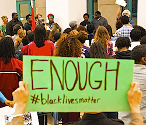

Friends,
The moment we've been preparing for is upon us. A Missouri grand jury, empaneled to determine whether to charge Ferguson Officer Darren Wilson with a crime for shooting and killing unarmed teenager Michael Brown, is about to announce its decision.
After pressure from the Don't Shoot Coalition in St. Louis -- of which FOR is a member -- rules of engagement for protest and response were proposed. In a compromise, local officials agreed to three-hour alert prior to the announcement of the grand jury's decision. We have now received that alert.
The family of Mike Brown have been notified of the grand jury's decision. We are awaiting the general announcement to the public, said to be planned for 8:00 PM Central Time tonight.
We have prepared for this moment in hours, weeks, months.
We pray, hope and will act for a response that furthers the demands of Black Lives Matter.
In our response, we are committed to the principles and strategies of nonviolence.
Take action tonight
 Regardless of the outcome, please join with FOR chapters, affiliates and other groups in solidarity around the country when the decision is announced. For instance, the FOR-affiliated Peace and Justice Action League of Spokane, Washington, is gathering at city hall this evening. Regardless of the outcome, please join with FOR chapters, affiliates and other groups in solidarity around the country when the decision is announced. For instance, the FOR-affiliated Peace and Justice Action League of Spokane, Washington, is gathering at city hall this evening.
For those in the St. Louis area, faith communities are gathering at 7:00 PM at West Side Baptist Church's North County Campus (map). Tomorrow at 7:00 AM, clergy will gather at Shaw Park (map) for a united action.
For those in the Columbia, Missouri area, a community convergence has been planned for 9:00 PM at Second Baptist Church at Broadway and 4th Street (map).
Please check with your local chapter or peace group to see what's planned. If you don't have a group in your area, try searching on Facebook or Twitter for phrases like "Ferguson," "Michael Brown" or "#BlackLivesMatter" to see what's happening in your area.
There is also a nationwide directory of response actions posted on Tumblr that may have your city listed.
At the moment of the announcement, Mike Brown's parents have asked for 4½ minutes of silence nationwide, remembering the four and a half hours their son's body was left on the street.
Other ways to get involved
If you are able to do so, we strongly encourage you to donate to the Missouri legal support fund for those arrested in Ferguson, set up locally through Missourians Organized for Reform and Empowerment. While we can hope that there will be no arrests of those demonstrating for racial justice, we want to be prepared should that come to pass.
Follow updates directly from Ferguson by following FOR Fellow Rev. Sekou on Twitter or on Facebook.
FOR will also endeavor to repost information from local organizers on the FOR Facebook page and the FOR Twitter account.
If you're on Twitter, check out the Deep Abiding Love project, sharing messages of militant nonviolent direct action and love, and consider posting your own #DeepAbidingLove message on Twitter. Additionally, you may find value in some of the activists on Twitter we profiled in an earlier email: Ashley Yates, Millennial Activists United; Feminista Jones, National Moment of Silence (#NMOS14); Brittany Ferrell, Millennial Activists United; Shordee (Nettaaaaaaaa), ThisIsTheMovement.org; Tef Poe, Hands Up United; and Mariame Kaba, Project NIA.
Forward for racial justice
As Rev. Sekou wrote yesterday, the clergy's place is with the protesters in Ferguson.
Regardless of the outcome of the decision, there is much work still to do for all of us.
Like the Occupy movement's success in igniting a national conversation about wealth inequality, the movement in Ferguson is furthering and coalescing a conversation about the urgency of addressing racial profiling, police accountability and community militarization.
FOR peace and justice,
 Rev. Kristin Stoneking Rev. Kristin Stoneking
Executive Director
Fellowship of Reconciliation
|